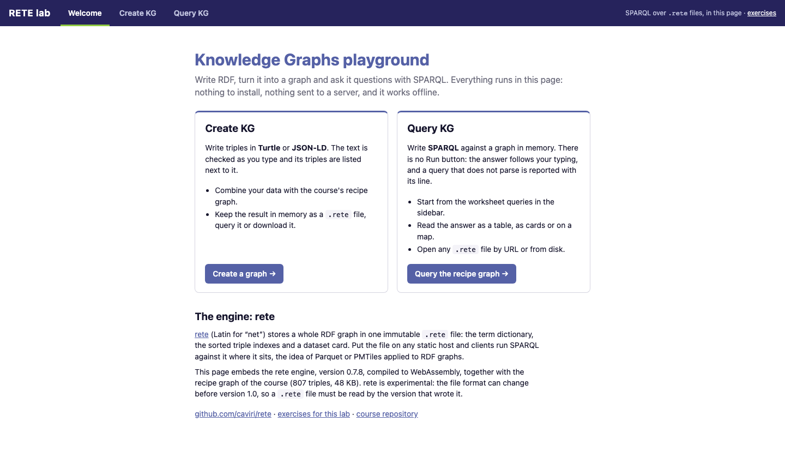
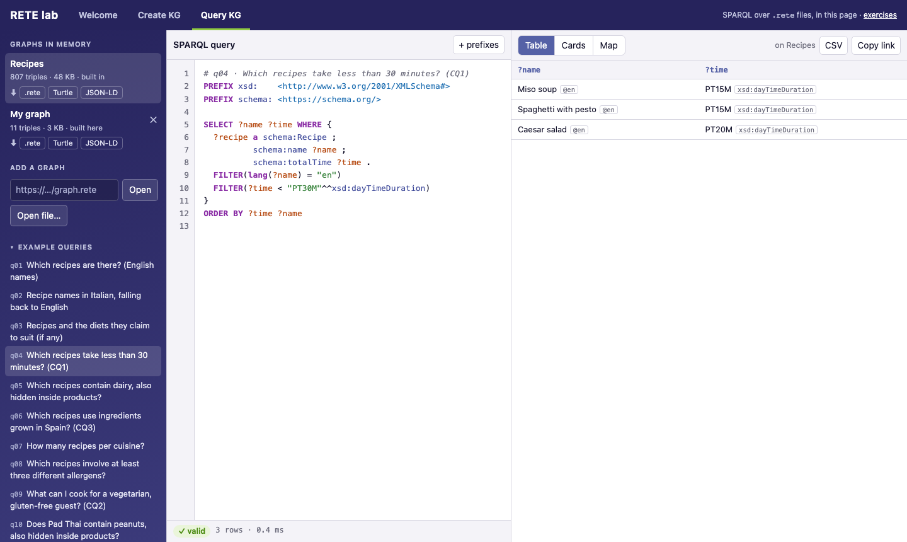
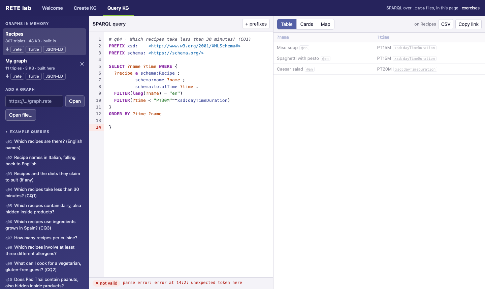
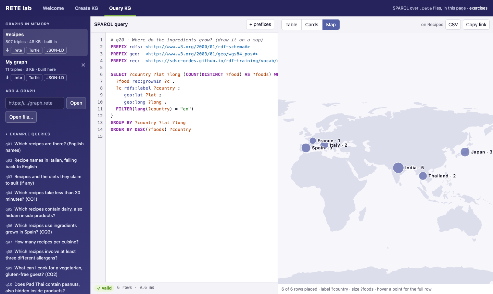
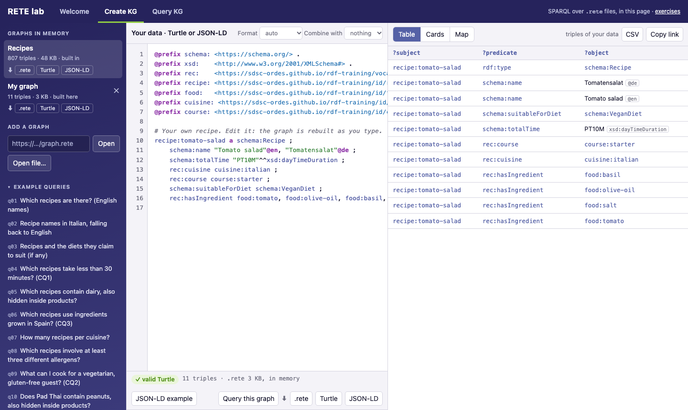
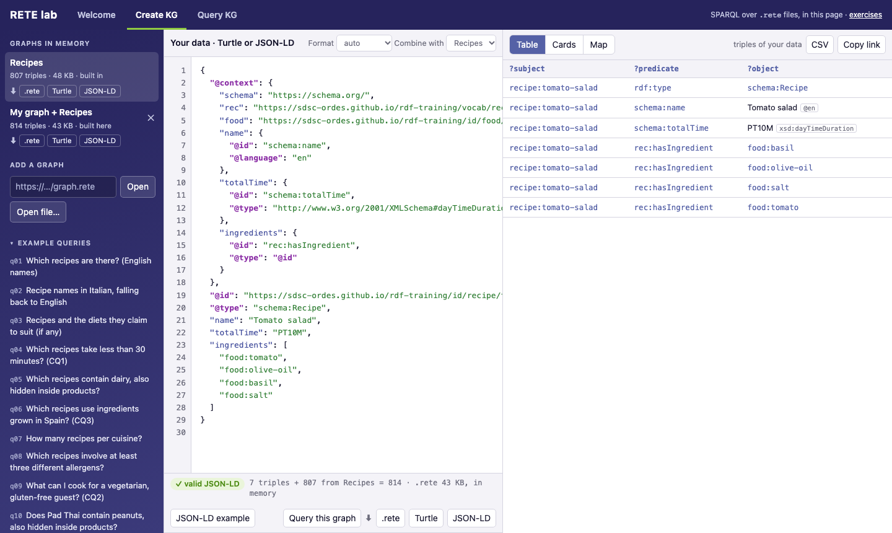
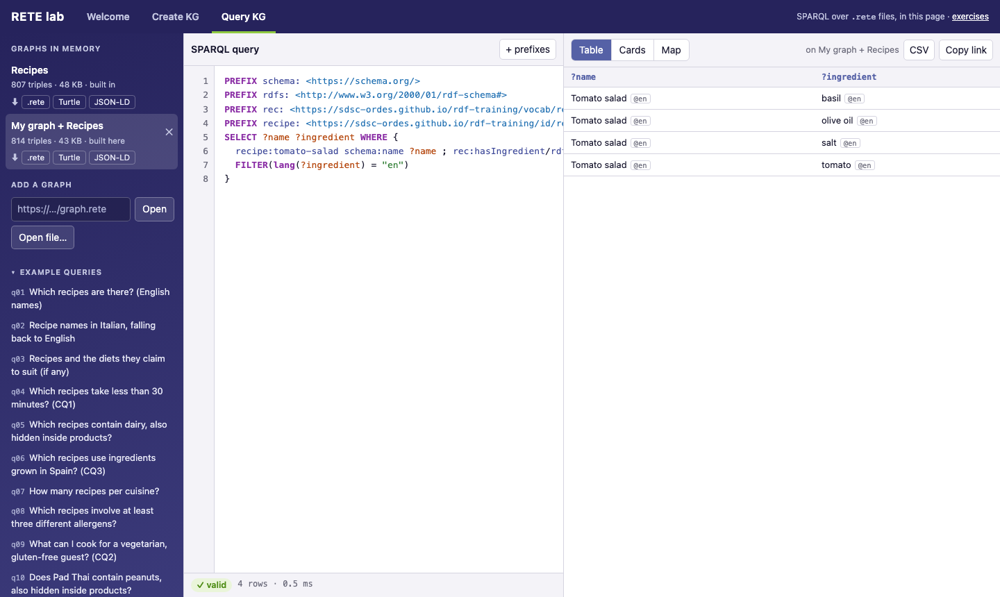

What it is
rete stores a whole RDF graph in one immutable .rete file: the terms,
the sorted triple indexes and a dataset card. The lab embeds the rete engine (WebAssembly) and
recipes.rete, the course graph of 807 triples in 48 KB. It supports the hands-on
parts of the course: querying (H3), and writing and checking your own data (H1, H2).


Exercises
1 · Query the recipe graph 10 min
- Open the lab, go to Query KG and pick
q04in the sidebar. Predict the answer before you read it. - Change
PT30MtoPT45M. There is no Run button: the answer follows your typing. - Delete the last
}. The status line says where the query stops being valid, the line is marked in the margin, and the last good answer stays on screen, dimmed. - Open
q09and add a third diet, or remove one. Switch the answer to Cards.

2 · Put an answer on a map 5 min
- Open
q20: where do the ingredients grow? The lab draws a map when a query returns?latand?long(or a WKTPOINT). - A numeric variable sets the size of each point, another one its label. Change the query to count recipes per country instead of foods.

q20 on the map. The coordinates are in src/data/golden/countries.ttl.3 · Write your own recipe 15 min
- Switch to Create KG in the top bar. A starter recipe is there; the status line tells you whether it is valid, and the right pane lists its triples as you type.
- Replace it with a recipe of your own, in Turtle or JSON-LD (the format is detected; JSON-LD example shows the same recipe in JSON-LD). Reuse the
food:,cuisine:andcourse:IRIs of the course. - Set Combine with to Recipes. Your triples and the course graph become one
.retefile, held in memory. - Press Query this graph (it takes you to Query KG) and run
q01,q04andq09again. Does your recipe show up where you expect it? - The download buttons (⬇) save the graph as a
.retefile, as Turtle or as JSON-LD. Send the.reteto your neighbour, who opens it with Open file…. Every graph in the sidebar has the same three downloads.



4 · Open a graph from the web 5 min
- Paste
https://caviri.github.io/rete/docs/plaza/data/linked-jazz.reteunder Add a graph and press Open. - You know nothing about this graph. Find its predicates first:
SELECT ?p (COUNT(*) AS ?n) WHERE { ?s ?p ?o } GROUP BY ?p ORDER BY DESC(?n) - Copy link gives a URL that reopens the same graph, query and view.
.rete file from it. GitHub Pages does. The lab downloads the whole file, so keep to files of a few megabytes.Links that open a query
Worksheets and slides can link straight into the lab. The part after # takes:
| Parameter | Meaning |
|---|---|
q | the SPARQL query, URL-encoded |
url | a .rete file to open and query instead of the built-in graph |
view | table (default), cards or map |
lab.html#view=cards&q=SELECT%20%3Fs%20WHERE%20%7B%20%3Fs%20a%20%3Chttps%3A%2F%2Fschema.org%2FRecipe%3E%20%7DRebuild
From a checkout of sdsc-ordes/rdf-training, after just setup:
bash src/rete/build-rete.sh # docs/data/recipes.rete, then docs/lab.html (or: just rete)
node src/rete/check-lab.mjs # drive the page in a browser (or: just check-rete)build-rete.shconcatenates the ontology, the SKOS value lists and the instance data fromsrc/data/and runsrete build. It uses the rete command-line tool at the version pinned in the script and downloads the release binary, checked against its SHA-256 sum, when that version is not installed.build-lab.mjsinlines the engine (rete-graphfrom npm, same version), the.retefile, the worksheet queries and a world outline intosrc/rete/lab.html.- The file format is not stable before rete 1.0: the command-line tool and the engine in the page must be the same version. Rebuild after changing the data, the queries or either version.
AI disclosure
The lab, the build and check scripts, this page and the map query q20 were written with an AI coding assistant:
Claude Fable 5.2 (claude-fable-5-2, Anthropic) running in Claude Code, directed by a course maintainer.
- Strategy. Two sub-agents worked in parallel before any code was written: one read the rete repository (file format, command-line tool, JavaScript API, hosting rules), the other mapped this repository (site, hands-on files, tests, build). The main agent then wrote the code and the text from their reports.
- Checks. The claims above were tested, not assumed: the Python test suite, the JavaScript cross-check, and
check-lab.mjs, which runs every worksheet query in the built page and compares the row counts with the course snapshots. The screenshots on this page are written by that script. - Human part. The requirements, the layout of the lab and the choice to keep the map coordinates in the course data came from the maintainer. The course data, ontology and worksheet queries
q01toq19are not AI-generated by this change. - Not AI. Nothing in the lab calls a language model. Queries run in the rete engine inside the page.